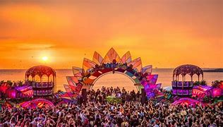

Electric Castle

Electric Castle is a one-of-a-kind music festival held at Bánffy Castle in Bonțida, Romania. Known for its unique blend of music genres like electronic, rock, and indie, it transforms the historic castle into a vibrant and immersive experience. The festival combines music, arts, and technology, attracting world-renowned artists and offering an eclectic mix of performances.
Untold Festival

Untold Festival is a major music event in Cluj-Napoca, Romania. It features top international electronic, pop, and hip-hop artists, creating an exciting atmosphere with impressive light shows and multiple stages across the city's central park and stadium.
Neversea Festival
Held on the beaches of Constanța, Neversea is one of the biggest seaside music festivals in Romania. It features electronic, pop, and hip-hop artists from around the world, offering a vibrant experience right by the Black Sea coast, attracting thousands of music lovers for several days of non-stop entertainment.
Jazz Festival

Held in the village of Gărâna, this festival is one of the most important jazz festivals in Eastern Europe. Set in the scenic Carpathian Mountains, it features international and local jazz musicians, creating an intimate and unique experience that blends music with nature. The festival usually takes place in July and attracts jazz enthusiasts from Romania and abroad, with performances happening on multiple open-air stages.